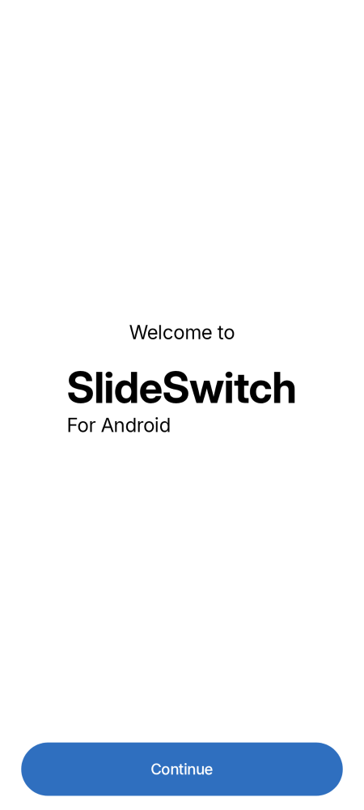
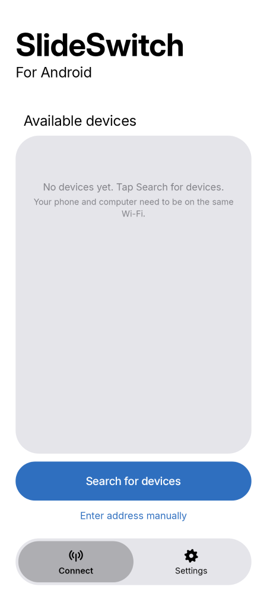
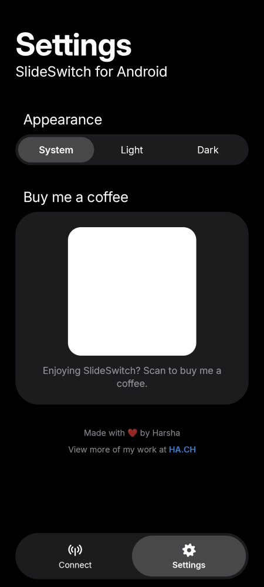
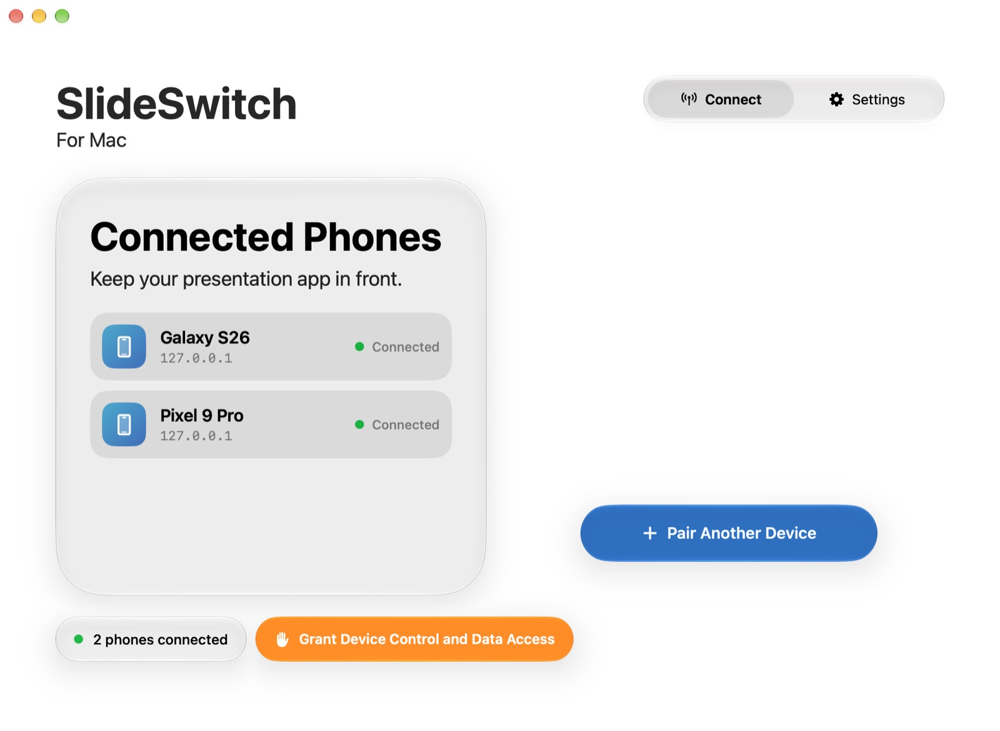
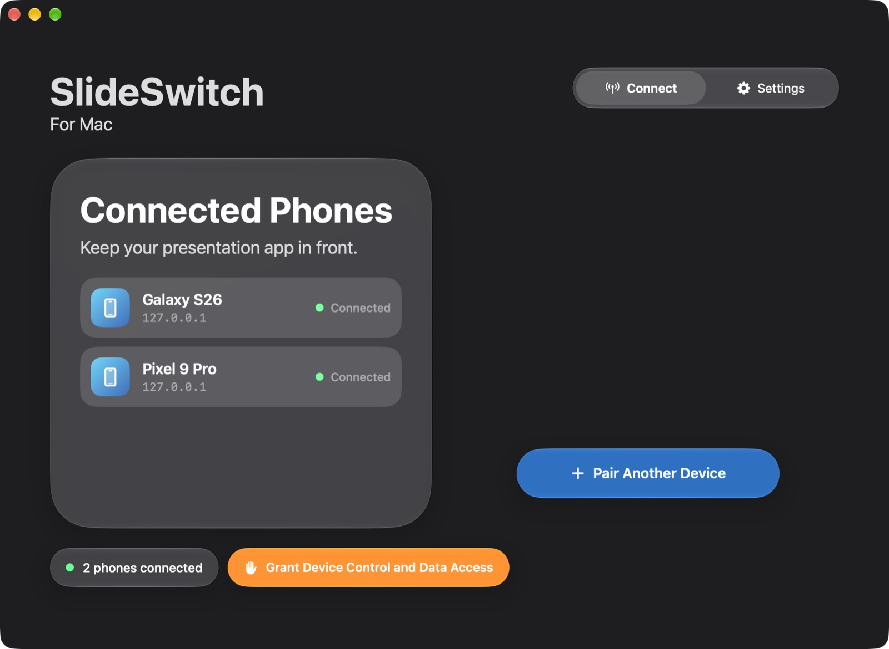
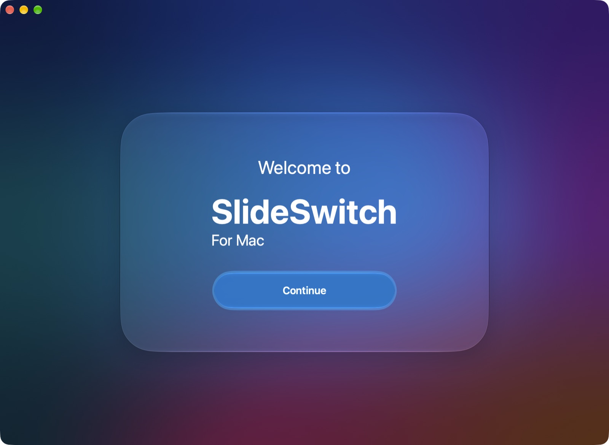
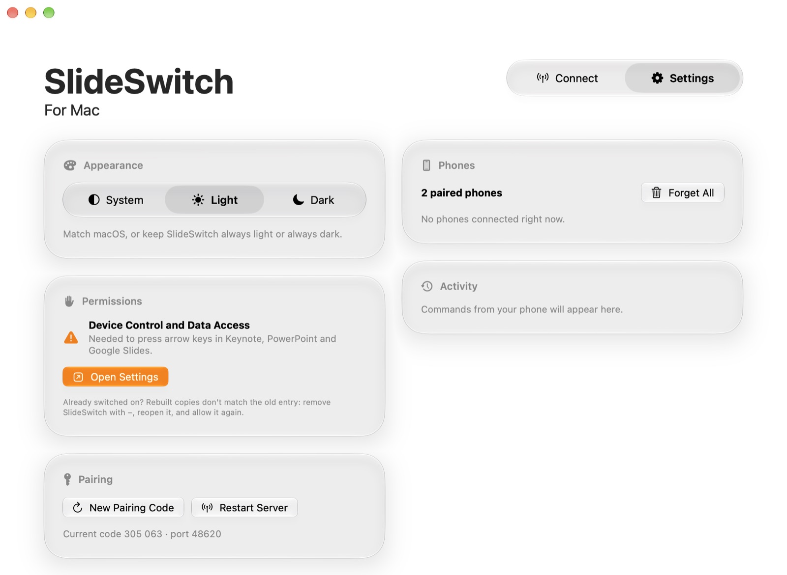

Android remote
Finds computers on your network automatically, with a light and dark mode and big, satisfying buttons.



Your slides, from your pocket.
Turn your Android phone into a presentation remote for Keynote, PowerPoint and Google Slides, on your Mac or Windows PC. Pair once with a QR code and walk the stage.


Run SlideSwitch on your Mac or PC. It shows a pairing code and a QR code, and announces itself on your Wi-Fi.
Scan the QR with your camera, tap the computer in the list, or type the code. The phone remembers it next time.
Big Next and Previous buttons, Start, End and a black screen. Keys go to whatever app is in front.
Liquid Glass on Mac, Fluent on Windows, and an Apple-style remote on Android.
Finds computers on your network automatically, with a light and dark mode and big, satisfying buttons.



Liquid Glass throughout: an animated QR, morphing pairing cards, and System, Light or Dark appearance.


Native WinUI 3 with Mica and Fluent controls, and the same pairing flow as the Mac app.
Free and open source. Get the phone app and the companion for your computer.
The remote. Android 8 or later.
Download APK Allow installs from your browser when Android asks.The companion. macOS 26 Tahoe or later.
Download for Mac Not notarized yet: right-click the app › Open the first time.The companion. Windows 10 1809 or later, x64.
Download for Windows Unzip and run SlideSwitch.exe. SmartScreen may ask once.